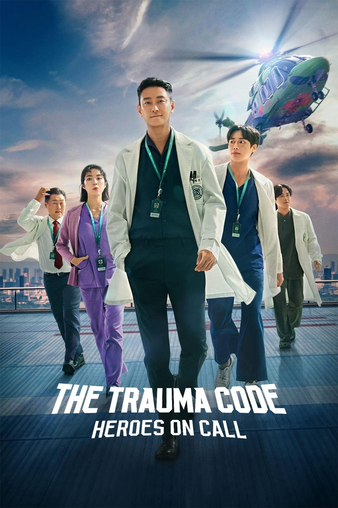
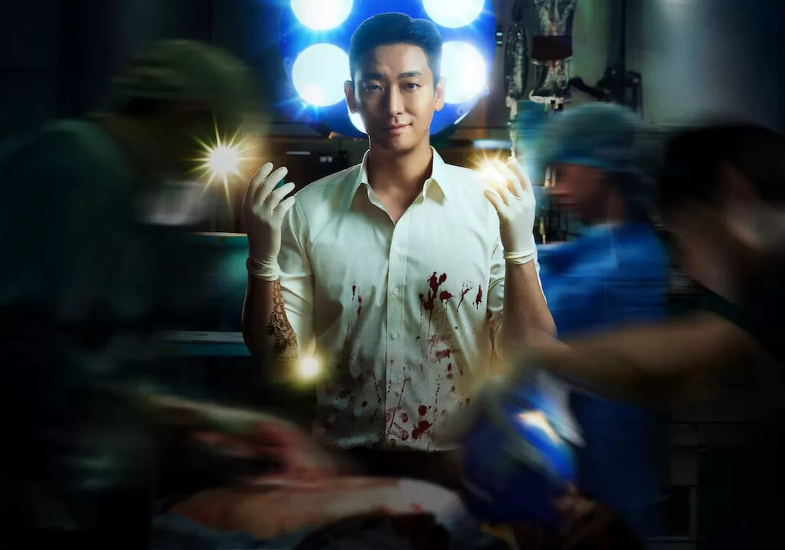
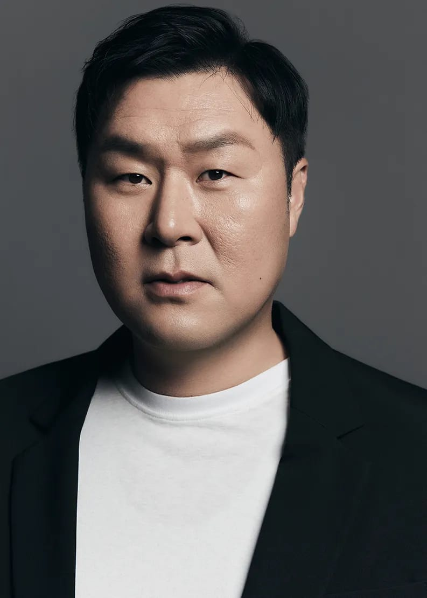

Netflix Original K-Drama
This Korean drama tells a story about Dr. Baek Kang-hyuk. He is a very smart and talented trauma surgeon who used to work in war zones. Now, he joins a hospital trauma center that has a lot of financial problems. His main goal is to save critical patients and help people during their most dangerous moments, which is called the golden hour.
Hankuk University Hospital faces a very big problem because their trauma unit is losing a lot of money every month. However, everything changes drastically when Dr. Baek Kang-hyuk comes to work there. He brings new and extreme medical standards to save dying patients at all costs, even when other doctors say it is impossible.
Together with his small but solid team, he works very hard inside the operating room. At the same time, he also has to fight against the bad politics of the hospital directors to protect their emergency rescue helicopter and facilities.

Ju Ji-hoon
Choo Young-woo

Yoon Kyung-ho
Ha Young
Jeong Jae-gwang